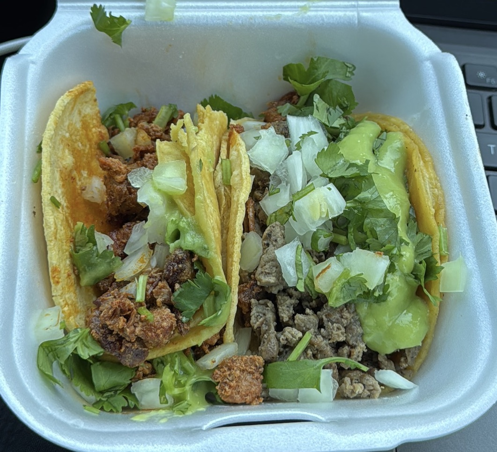

The Unexpected Eat, Pray, Love Trip to Death Valley.
With zero research under my belt (except for knowing Vegas existed), my sister convinced me to go on this adventure. A week before departure, I realized—wait… Death Valley involves hiking?? 😅 But hey, I was in for a surprise, and honestly, WOW, I’m glad I didn’t back out!
Day One: Vegas to the Heart of Death Valley
Start your engines: 10 AM
Leaving vegas in the morning is best because it is a 2 hour trip. gives you enough time to stop by and grab tacos 😋
Furnace Creek – Getting Our Pass
First stop—Furnace Creek! This place is the gateway to Death Valley, where we grabbed our park pass and realized, “Oh… this is serious wilderness.” 🌵☀️

Zabriskie Point – First WOW Moment
OMG. I didn’t know rocks could look like this! Rolling golden waves of earth stretched out before us, like something from another planet.
Dante’s View – Standing Above the Valley
We drove up to Dante’s View, and HOLY WOW!! Standing 5,500 feet above the valley, the landscape stretched out below us like a sea of golden sand.

If you look behind us, that is Badwater Basin (remember for later on.)
Stovepipe Wells
After watching a breaktaking sunset, make your way to Stovepipe Wells to check into your stay and unwind at their courtyard. oh and their fine dining - did I mention "The only restaurant in that area." The service was amazing!


Mesquite Flat Sand Dunes – Stargazing
At night when Mesquite Flat Sand Dunes is a great location for a stargazing experience under the dark sky.
THIS was magic. The desert sky, free of city lights, exploded with stars. Just us, the silence, and a million twinkling lights above. 🌌✨


Day Two: Sunrise and Canyon Hikes
Sunrise at Mesquite Flat Sand Dunes
Dragged ourselves out of bed (why do sunrises happen so early??) and wow… worth it. The dunes glowed pink and gold. Breathtaking.


Mosaic Canyon – The Unexpected Wonderland
This narrow slot canyon looked like a marble hallway, with smooth rock walls twisting around us. Straight out of an adventure movie!

Exploring Golden Canyon and Red Cathedral
After Mosaic Canyon, I would recommend heading back to the fiest diner in town and grab something to bite as well as lunch for later on in the day. then driver over to (drumroll) Golden Canyon as you hike in the canyon there is a rewarding gem we were informed about with another bypasser called Red Cathedral. Just jaw-dropping!


Artist’s Palette – A Rainbow in the Desert
INSANE!! The mountains were streaked with pinks, greens, purples, and blues—like nature’s tie-dye masterpiece. Honestly the picture does no justice.

Devil’s Golf Course – Rocks Sharp Enough to Cut
We walked out onto this jagged, alien-looking landscape and realized—no golf is happening here. The ground was rough, sharp, and wild.


📸 "If I trip here, I’m staying down. Goodbye, world." 😵
Natural Bridge – A Hidden Gem
A short hike (yay, finally something easy!) led us to this massive rock bridge tucked away in the canyon. Simple, stunning, and peaceful.

📸 "The only bridge I’ve ever hiked to instead of driven over."
Badwater Basin – Sunset at the Lowest Point in North America
Standing 282 feet below sea level, with nothing but salt flats before us, we watched the sun sink behind the mountains. Otherworldly.


The firey skies were stunning


BONUS: Stargazing at Badwater Basin. Walk a mile out onto the salt flats. No lights. No sound. Just the Milky Way overhead. *Absolutely unreal.*